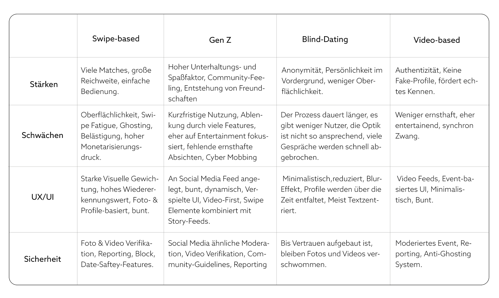
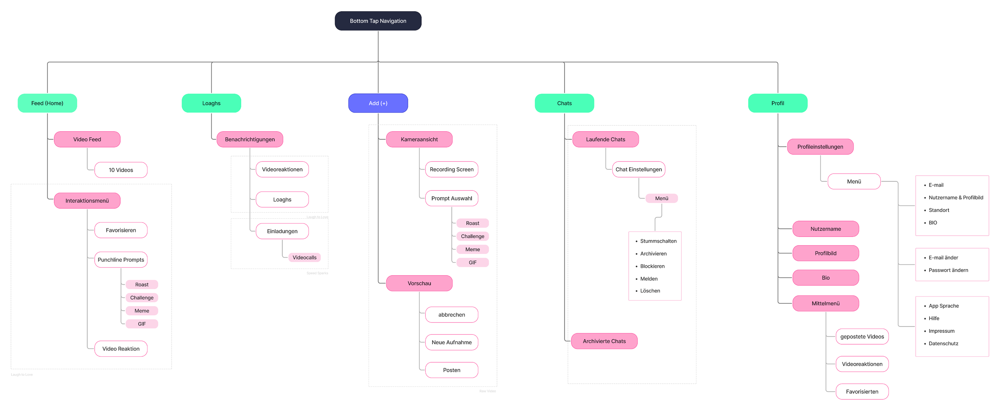
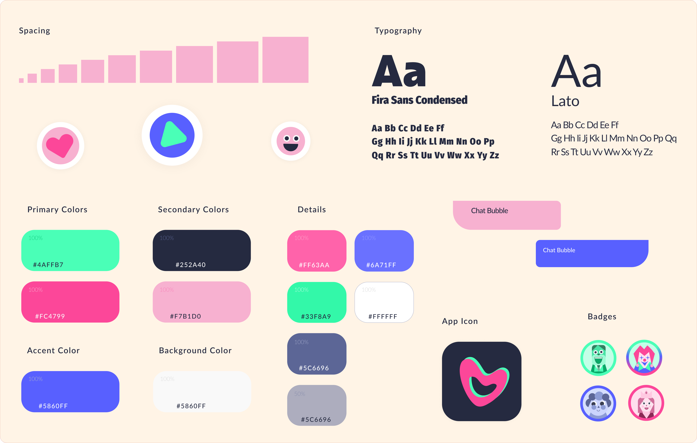
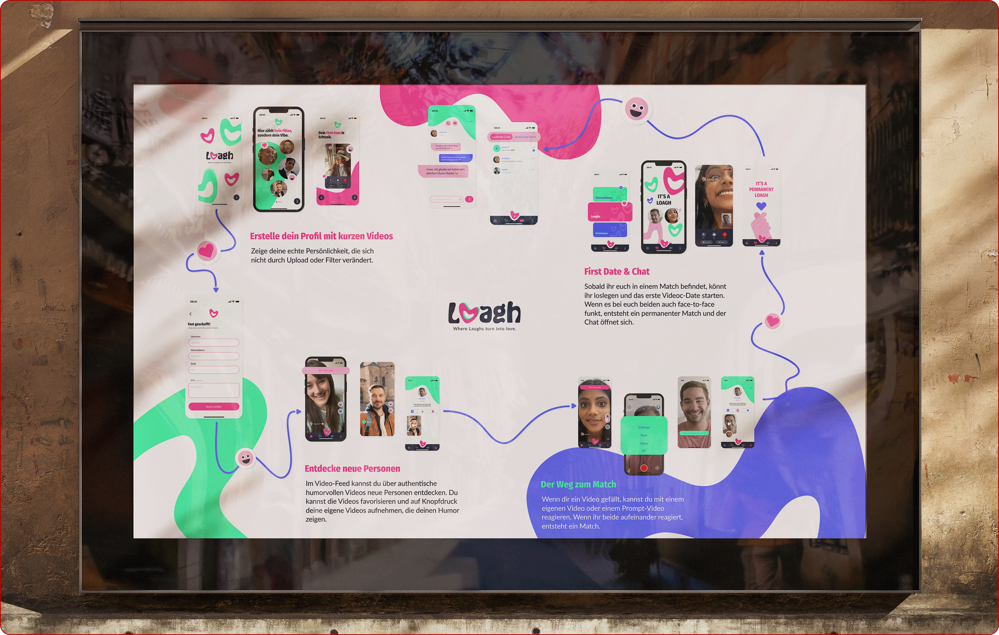

Loagh
Where laughs turn into love.
Dating neu gedacht: Eine videobasierte Dating-App für die Gen Z (18-26 Jahre), die die Ermüdung durch oberflächliches Swipen (Swipe Fatigue) beendet und konsequent auf Humor, Spontaneität sowie ungefilterte Authentizität setzt. Klassische Swipe-Apps wie Tinder oder Bumble werden von der Gen Z zunehmend als oberflächlich und anstrengend empfunden. Loagh bringt Spannung, Neugier und Lachen zurück in den Kennenlernen-Prozess.

Flows


- Keine Bearbeitung, keine Filter: Profilvideos werden ausschließlich in Echtzeit direkt über die App aufgenommen.
- Humor als Icebreaker: Durch kreative Prompts („Erzähl deinen schlechtesten Witz“) zeigen Nutzer:innen ihre echte Persönlichkeit. Ein Match entsteht erst, wenn beide über die Reaktionsvideos des anderen lachen!
- Qualität statt Quantität: Ein auf 10 Videos pro Tag limitierter Feed und maximal 3 Matches pro Woche verhindern Ablenkung und fördern echtes Interesse.
Prozess
User Research & Konkurrenzanalyse
Durch die Analyse von über 30 Dating-Apps (unterteilt in die Kategorien Swipe-based, Video-based, Community-basedund Blind Dating) wurde deutlich, dass die Gen Z weg vom perfekten Schein und hin zu echter Transparenz tendiert. Loagh kombiniert die Anonymitäts-Spannung von Apps wie Blindmate gezielt mit der Dynamik von direktem Video-Content.

- Reine Authentizität: Maximal 60-sekündige Profilvideos, die ohne Upload-Funktion, Filter oder Schnitte direkt in der App entstehen. Die Limitierung auf 10 Videos pro Tag schützt Nutzer:innen effektiv vor endlosem Social-Media-Scrolling.
- Laugh to Love: Lachen setzt Oxytocin und Endorphine frei, die echte Nähe schaffen. Über humorvolle Prompts (Punchline, Dad Jokes, Memes) werden spontane Reaktionsvideos ausgetauscht.
- Speed Sparks (Virtuelle First Dates): Bevor stundenlang geschrieben wird, gibt es kurze, spielerische Videocalls oder Clip-Interaktionen. Erst wenn beide danach zustimmen, schaltet sich der dauerhafte Chat frei (Permanent Match).
Die 3 Alleinstellungsmerkmale (USPs)


Scribbles
In den Scribbles wurden zentrale UI-Komponenten wie das Navigationsmenü, die Positionierung des Aufnahme-Buttons sowie die Rasteransichten für Reaktionen und Matches iterativ erarbeitet. Besondere Aufmerksamkeit galt hierbei der Barrierefreiheit, der Daumen-Erreichbarkeit auf Mobilgeräten und ausreichendem Weißraum für ein luftiges Interface.


Die Skizzen verdeutlichen das Herzstück von Loagh: das Antworten auf Videos mittels humorvoller Prompts (z. B. Dad Jokes oder Punchlines). Nutzer:innen können direkt im Feed auf das Smiley-Icon tippen, um ein eigenes Reaktionsvideo aufzunehmen. Ein Match entsteht erst durch die gegenseitige Reaktion mit einem Lachen.
Der finale Flow veranschaulicht das Match-Erlebnis mit visuellen Konfetti-Animationen und der Einladung zum ersten virtuellen Date (Speed Sparks). Nach einem kurzen Video-Call entscheiden beide Nutzer:innen per Banner-Abfrage über ein „Permanent Match“, wodurch sich erst im letzten Schritt der dauerhafte Text-Chat öffnet.
